Ранее здесь была небольшая программка на 15-20 строк по заданному алгоритму. Алгоритм подразумевал правильную обработку строк. Все же, я сохранил наработки по бывшему 12ому номеру и обернул их в сноску. Пускай будут, кто знает что в голове у экзаменаторов, могут вернуть под другим соусом.
В 2026 году это задание поменяли. Вместо обработки строк теперь у нас здесь Машина Тьюринга. Уникальное задание в своем роде, решается также уникально, к сожалению, руками. На самом деле, новая 12ая задача кажется сильно страшнее, чем решается. Самое сложное в этой задаче - прочитать огромное условие и вникнуть в него.
Поэтому я утружусь за вас, моих звездочек, и переформулирую условие. Оригинальное, тем не менее, оставлю здесь. Вы также можете его найти в любых пробниках начиная с 2026 года.
Дум0ем
Задание сформулировано довольно абстрактно. Это верный признак того, что его ТОЧНО будут усложнять на ЕГЭ будущих лет. Само условие и описание работы Машины Тьюринга вряд ли поменяется, меняться будут вопросы каждой конкретной задачи. В данный момент оно именно что страшное, но довольно простое в реализации.
У этого задания огромный простор для усложнения, поэтому в конце я постараюсь придумать универсальный алгоритм решения кодом. По крайней мере, достаточно универсальный, чтобы на момент 2026 решить любое задание, а в будущем просто модифицировать его.
Прототип МТ 12ого номера наиболее просто решается именно руками, а не универсальным кодом. Пока такового нет и простой идеи его реализовать как будто бы тоже нет. Тем не менее, я покажу оба варианта.
Бывший 12ый номер
Пример 1)
Начнем с тупейшего и простейшего прототипа этого задания.
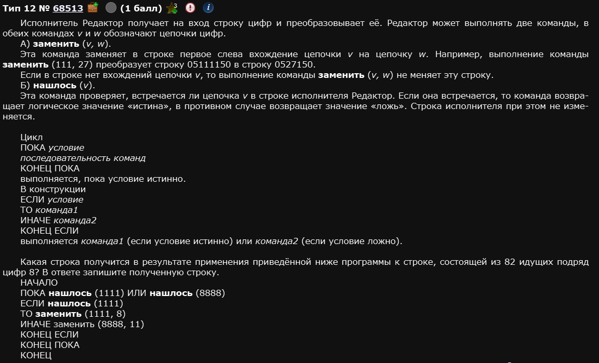
Собсна у нас почти все есть, нам надо только реализовать это все, от себя выдумывать ничего не нужно. Определим строку:
s = '8' * 82
Отлично, определили. Далее нужно переписать тот алгоритм, который задан в условии на язык питона. Все слова стоит понимать буквально - ПОКА отвечает while, ИЛИ - or, ЕСЛИ - if, ЗАМЕНИТЬ - метод replace, ИНАЧЕ - else. НАЧАЛО и КОНЕЦ при этом можно не писать, слава питону, высокоуровневому языку.
Ну и собсна все. По итогу работы программка выдает 118.
Ответ: 118.
Посмотрим на похожее задание:
Пример 2)
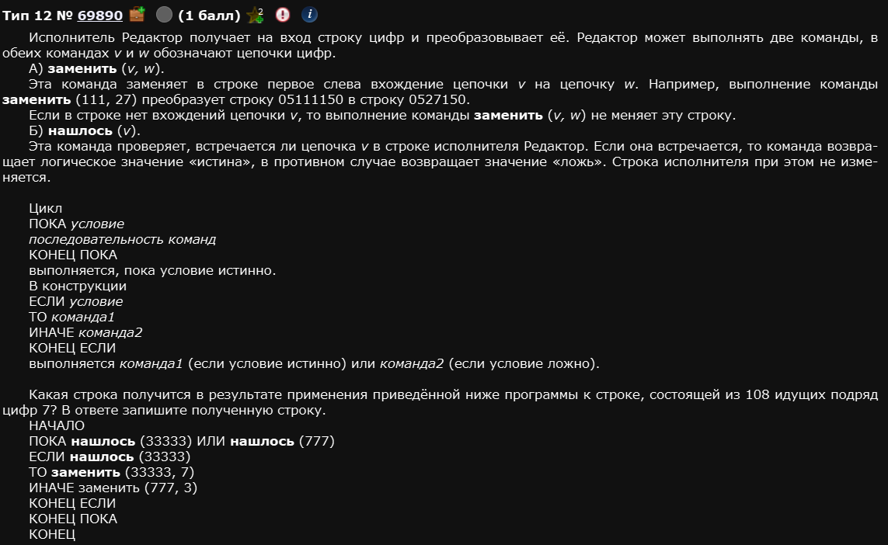
Собсна, полная аналогия, циферки другие
Ответ: 3337
Это все круто, но таких прототипов маловато. Если такое попалось на экзамене - считайте повезло. Давайте посмотрим на более сложные и более распространенные.
Пример 3)
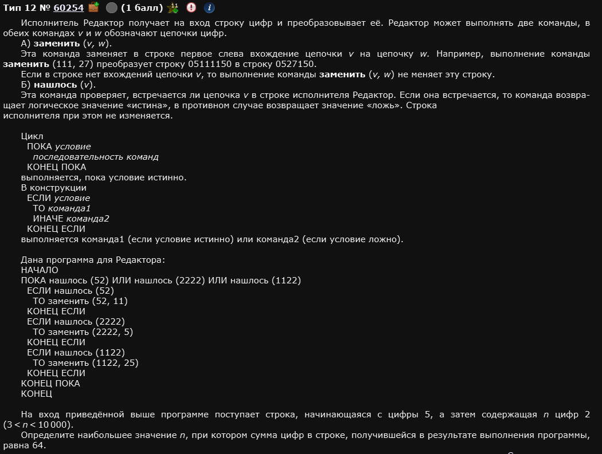
Итак, начнем с простого. Перепишем алгоритм, который дан для редактора с алгоритмического языка на пайтон:
while '52' in a or '2222' in a or '1122' in a: if '52' in a: a = a.replace('52', '11', 1) if '2222' in a: a = a.replace('2222', '5', 1) if '1122' in a: a = a.replace('1122', '25', 1)
Над ним мы будем шаманить.
Во-первых, у нас известно как выглядит строка (у меня обозначена a): это цифра 5 вначале и n штук двоек после. Сама постановка условия намекает, что нужен цикл. Давайте добавим:
for n in range(4, 10000): a = '5' + '2' * n while '52' in a or '2222' in a or '1122' in a: if '52' in a: a = a.replace('52', '11', 1) if '2222' in a: a = a.replace('2222', '5', 1) if '1122' in a: a = a.replace('1122', '25', 1)
Число итераций выбрано согласно условию. Судя по условию, нам нужны только те n-ки (ну типа их реально несколько может быть), у которых сумма цифр после прокрутки равна 64. Давайте прям в цикл добавим это условие:
for n in range(4, 10000): a = '5' + '2' * n while '52' in a or '2222' in a or '1122' in a: if '52' in a: a = a.replace('52', '11', 1) if '2222' in a: a = a.replace('2222', '5', 1) if '1122' in a: a = a.replace('1122', '25', 1) if sum_of_digits(a) == 64: print(n)
Я тут заранее написал пока что не обозначенную функцию проверки на сумму цифр sum_of_digits(a). Давайте ее тоже напишем. Напомню, что а - это строка, а нам надо сумму именно цифр. Т.е. в функции должно быть преобразование каждого отдельного символа в циферку:
def sum_of_digits(a): s = 0 for x in a: s += int(x) return s
Вс0
def sum_of_digits(a): s = 0 for x in a: s += int(x) return sfor n in range(4, 10000): a = '5' + '2' * n while '52' in a or '2222' in a or '1122' in a: if '52' in a: a = a.replace('52', '11', 1) if '2222' in a: a = a.replace('2222', '5', 1) if '1122' in a: a = a.replace('1122', '25', 1) if sum_of_digits(a) == 64: print(n)
По итогу работы программка выдает 3 числа: 152, 154 и 156. Судя по условию, надо наибольшее.
Ответ: 156.
Пример 4)
Посмотрим на похожий пример, условие отличается только лишь циферками, идея та же.
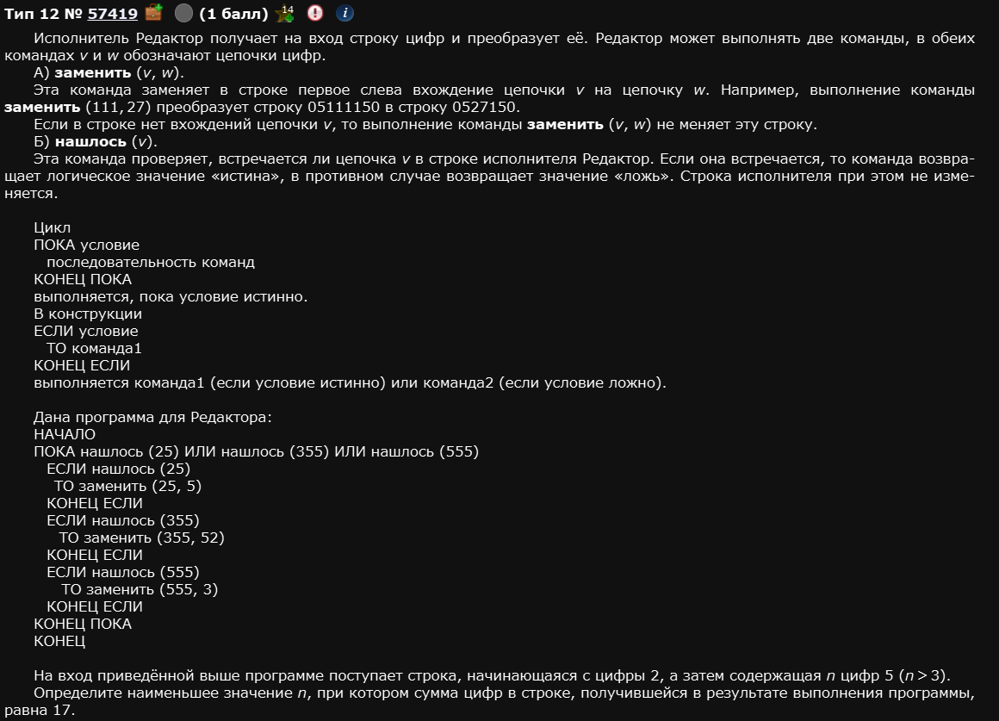
Все +- также, просто циферки другие. Последовательно пишем сначала алгоритм преобразования, определяем строку, засовываем все это в цикл, пишем условие, при котором у нас будет выводиться n, пишем функцию счета циферок:
def sum_of_digits(a): r = 0 for x in a: r += int(x) return r>for n in range (3,1000): a = '2' + '5'*n while '25' in a or '355' in a or '555' in a: if '25' in a: a = a.replace('25','5',1) if '355' in a: a = a.replace('355','52',1) if '555' in a: a = a.replace('555','3',1) if sum_of_digits(a) == 17: print(n)
Мой код, откровенно, халтурный. Процесс поиска минимального n можно оптимизировать, но я этого делать не стал, программа выводит все n, для которых f(n) = 17. Однако, в таком случае, стоит посмотреть на начало этого списка и взять первое значение в качестве ответа.
Ответ: 29
Приведу другой пример кода, который работает получше и сам покороче:
Этот код использует вот такую вот конструкцию:
sum(map(int,s))
Функция map применяет какую-то конкретную функцию (первый аргумент) ко всем последующим аргументам (переменные). Т.е. мы функцией map применили int (преобразование в число) к строке s. Причем функция map возвращает именно список, т.е. если изначально была строка ‘235’, то после всего этого действа станет
2,3,5
.
Ля прикол:
def myfunc(a, b): return a + b>x = map(myfunc, ('apple', 'banana', 'cherry'), ('orange', 'lemon', 'pineapple'))>print(x)>#convert the map into a list, for readability:print(list(x))
Вот эта штучка вернет следующее:
′appleorange′,′bananalemon′,′cherrypineapple′
Ну а раз есть список, то функция sum просто сумму находит, без хитростей. По итогу получим нужное условие.
Как-то так,,,
Ладно, хиханьки с хаханьками закончились,,, Давайте посмотрим на неприятный прототип этого задания.
Пример 5)
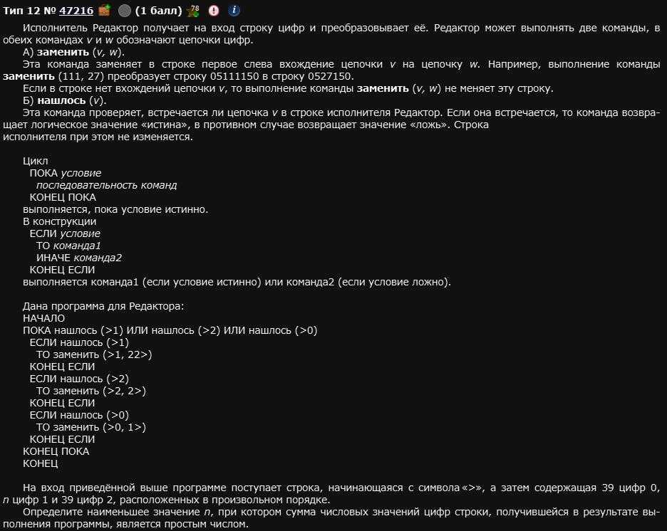
Неприятное задание из-за двух моментов: int не работает потому, что есть лишняя ”>” где-то в строке, а условие в вопросе требует отдельного цикла для выполнения.
Будем делать поэтапно. Сначала пишем алгоритм из условия, определяем строку, засовываем в цикл, стандартные действия:
for n in range(1000): s='>'+39*'0'+n*'1'+39*'2' while ('>1' in s) or ('>2' in s) or ('>0' in s): if '>1' in s: s=s.replace('>1', '22>') if '>2' in s: s=s.replace('>2', '2>') if '>0' in s: s=s.replace('>0', '1>')
А вот теперь надо P0D00MAT’,,,
Сумма цифр должна быть простым числом. Окей, давайте напишем такой алгоритм. Вообще, есть много способов проверки на простоту числа, самый банальный - тупо перебрать все числа вплоть до проверяемого. Если проверяемое число не делится ни на одно из чисел до него кроме единицы и его самого - значит проверяемое число простое (на самом деле можно проверять не до самого числа, а до половины этого числа (или даже до корня), но мы не паримся насчет оптимизации, нам важен правильный ответ и понятность того че мы делаем). Следовательно, нужен цикл:
k = 0 #чтобы для каждого числа кол-во делителей обновлялосьfor i in range(1, sum_of_digits+1): if sum_of_digits % i == 0: k += 1 if k > 2: break#Здесь k - это счетчик делителей. Для простого числа он должен оставаться равным 2, т.к. цикл начинается с 1 и бегает вплоть до самого числа. Если он станет больше 2, значит число не простое, продолжать цикл нет смысла и мы его прерываем. Соответственно, после этого цикла надо написать проверку# sum_of_digits - сумма цифр строки (пояснить подробнее?)if k == 2: print(n) break#break в конце написан для того, чтобы преравать цикл бОльший, который for из предыдущего блока кода т.к. нам нужно наименьшее n т.е. первый номер, который встретиться.
Осталось добавить sum_of_digits т.е. сумму цифр. Тут можно поступить тупо:
sum_of_digits = s.count('2')*2 + s.count('1')
А теперь объединяем все это неприличие в один код:
Вуаля, работает,,,
Ответ: 5.
Пример 6)
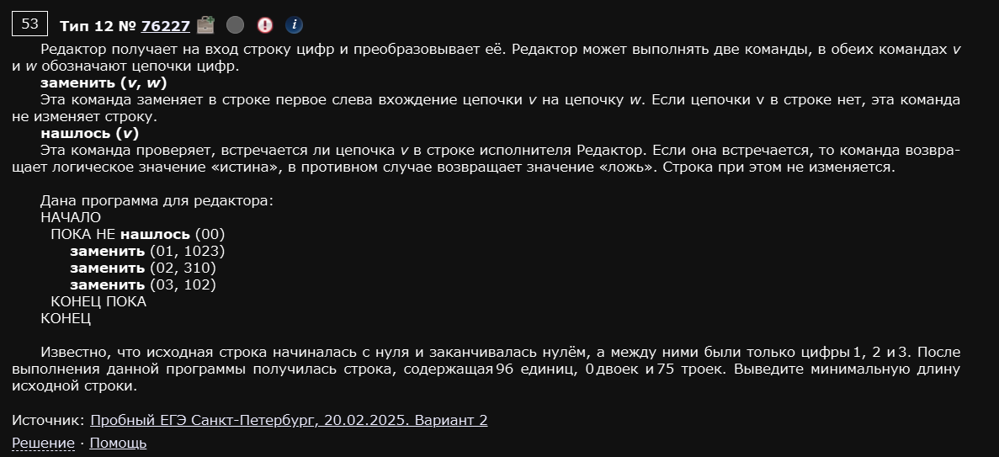
for n in range(1, 300): # n = длина "середины" (между нулями) for a in range(n + 1): # a = сколько '1' for b in range(n - a + 1): # b = сколько '2' c = n - a - b # c = сколько '3' s = "0" + "1"*a + "2"*b + "3"*c + "0"> while "00" not in s: s = s.replace("01", "1023", 1) s = s.replace("02", "310", 1) s = s.replace("03", "102", 1)> if s.count("1") == 96 and s.count("2") == 0 and s.count("3") == 75: print(n + 2) # +2 за два нуля по краям raise SystemExit>
КОГНИТИВНАЯ УГРОЗА
Если вы хоть сколь-нибудь себя уважаете - не пытайтесь читать оригинальное условие МТ. Тут без спокойной переформулировки сложно понять, что вообще происходит. Если я вас убедил - вам на заголовок “Переформулирую”.
Вы были предупреждены. Да поможет вам бог.
Демоверсия 2026, условие Машины Тьюринга
Исполнитель МТ представляет собой читающую и записывающую головку, которая может передвигаться вдоль бесконечной горизонтальной ленты, разделённой на равные ячейки. В каждой ячейке находится ровно один символ из алфавита исполнителя (множество символов A = {a0, a1, …, an − 1}), включая специальный пустой символ a0.
Время работы исполнителя делится на дискретные такты (шаги). На каждом такте головка МТ находится в одном из множества допустимых состояний Q = {q0, q1, …, qn − 1}. В начальный момент времени головка находится в начальном состоянии q0.
На каждом такте головка обозревает одну ячейку ленты, называемую текущей ячейкой. За один такт головка исполнителя может переместиться в ячейку справа или слева от текущей, не меняя находящийся в ней символ, или заменить символ в текущей ячейке без сдвига в соседнюю ячейку. После каждого такта головка переходит в новое состояние или остаётся в прежнем состоянии.
Программа работы исполнителя МТ задаётся в табличном виде.
Абоба
a0
a1
…
an−1
q0
команда
команда
…
команда
q1
команда
команда
…
команда
…
…
…
…
…
qn−1
команда
команда
…
команда
В первой строке перечислены все возможные символы в текущей ячейке ленты, в первом столбце — возможные состояния головки. На пересечении i-й строки и j-го столбца находится команда, которую выполняет МТ, когда головка обозревает j-й символ, находясь в i-м состоянии. Если пара «символ — состояние» невозможна, то клетка для команды остаётся пустой.
Каждая команда состоит из трёх элементов, разделённых запятыми: первый элемент — записываемый в текущую ячейку символ алфавита (может совпадать с тем, который там уже записан). Второй элемент — один из четырёх символов «L», «R», «N», «S». Символы «L» и «R» означают сдвиг в левую или правую ячейки соответственно, «N» — отсутствие сдвига, «S» — завершение работы исполнителя МТ после выполнения текущей команды.
Сдвиг происходит после записи символа в текущую ячейку. Третий элемент — новое состояние головки после выполнения команды.
Например, команда 0, L, q3 выполняется следующим образом: в текущую ячейку записывается символ «0», затем головка сдвигается в соседнюю слева ячейку и переходит в состояние q3.
Приведём пример выполнения программы, заданной таблично. На ленте записано неизвестное ненулевое количество расположенных подряд в соседних ячейках символов «Z», все остальные ячейки ленты заполнены пустым символом «λ». В начальный момент времени головка находится на неизвестном ненулевом расстоянии справа от самого правого символа «Z».
Программа
Абоба
λ
Ζ
q0
λ,L,q0
X,L,q0
q1
λ,L,q1
X,L,q0
заменяет на ленте все символы «Z» на «X» и останавливает исполнителя в первой ячейке слева от последовательности символов «X».
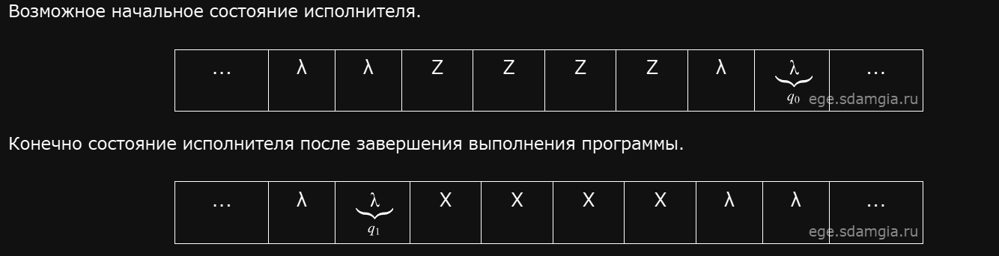
Выполните задание.
На ленте в соседних ячейках записана последовательность из 1000 символов, включающая только нули и единицы. Ячейки справа и слева от последовательности заполнены пустыми символами «λ». В начальный момент времени головка расположена в ближайшей ячейке справа от последовательности.
Программа работы исполнителя.
Абоба
λ
1
0
q0
λ,L,q1
q1
λ,S,q0
0,S,q1
1,L,q1
После выполнения программы на ленте осталось ровно 343 нуля. Определите максимально возможное число нулей в исходной последовательности.
Переформулирую
Итак, есть лента, поделена на клеточки. В каждой клеточке записан один символ. В алфавите только 0 и 1 (в разных заданиях по-разному, в этом так). Слева и справа от этой ленты есть специальный символ λ означающий пустоту, границу последовательности. Вот такая лента:
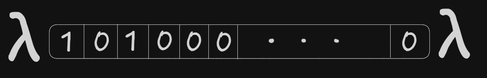
А еще у нас есть некая “головка исполнителя МТ”. Я предлагаю не принимать мысль о том, что мы работаем с головкой некоего МТ, поэтому назовем его Борисом, исполнительным нашим дройдекой. Так вот, Боря стоит изначально справа от всей ленты, над правой буквой λ.
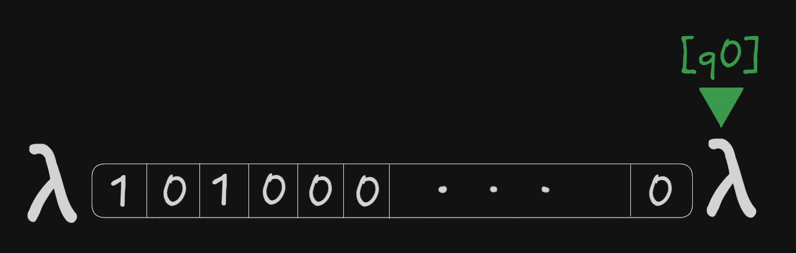
Боря умеет:
Читать символы в клетке
Записывать символ в клетку
Двигаться влево и вправо
Менять режимы работы q0, q1, ...
Боря - это робот с памятью в 1 клетку.
Ну а теперь к тому как работает программа
Программа - это таблица. Например такая:
Абоба
λ
1
0
q0
λ,L,q1
q1
λ,S,q0
0,S,q1
1,L,q1
Строки - это текущее состояние Бори q0, q1, ...
Столбцы - это символы, которые Борис сейчас зрит λ, 0, 1
В клетке таблицы:
Что записать, куда двинуться, в какое состояние перейти
Например:
1, L, q1
Означает:
Записать 1 в текущую клетку
Сдвинуться влево
Перейти в состояние q1
Когда программа заканчивается?
Если во второй части стоит S:
Что-то, S, что-то
Это значит СТОП. Программа завершает работу.
Чуть подробнее остановимся именно на том как читается табличка
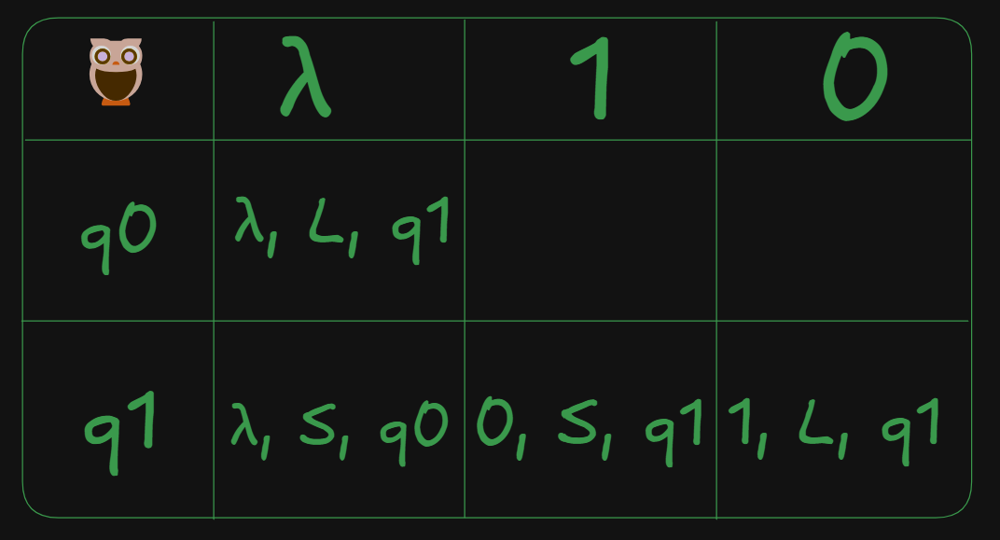
Мы начинаем с состояния q0 и символа λ. Т.е. вот отсюда:
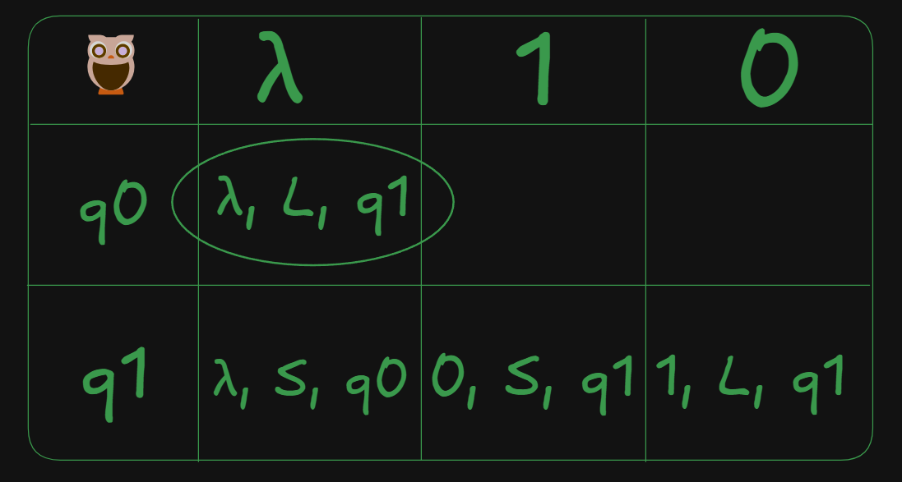
Тут написано:
Поставь символ λ, сдвинься на клетку ВЛЕВО, перейди в состояние q1
Т.е. на нашей ленте из вот такой ситуации:
Боря перешел вот в такую:
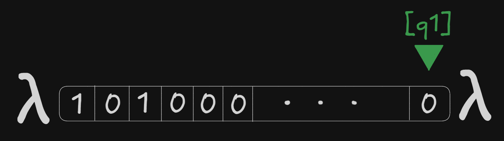
Боря теперь видит 0, находится в состоянии q1. Т.е. по табличке мы сделали вот такой переход:
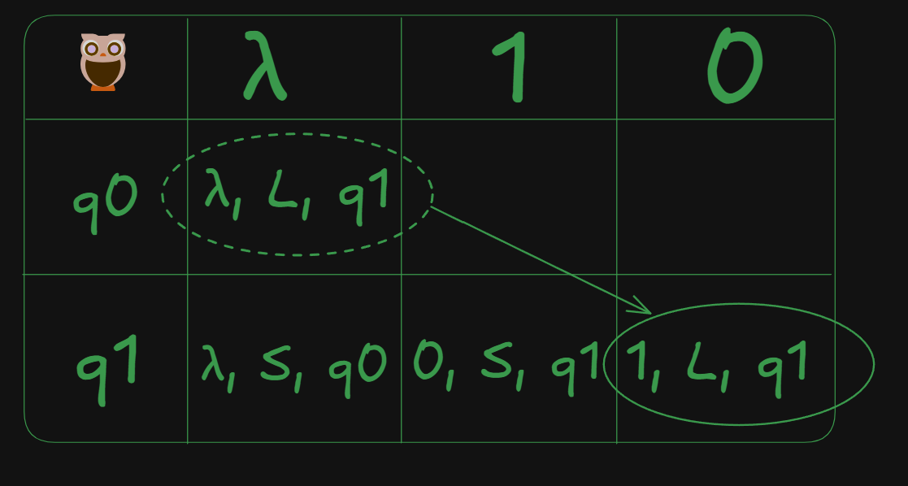
В команде написано:
Напиши 1, двинься ВЛЕВО, перейди в состояние q1
Мы уже в состоянии q1, поэтому режим работы он не меняет.
А теперь ключевое в нашем задании
Обратите внимание как выглядит последовательность. Да, это пример. Но это ОЧЕНЬ показательный пример.
Дык вот, в данном задании Боря просто делает АРИФМЕТИЧЕСКОЕ ВЫЧИТАНИЕ.
Ну т.е. он буквально меняет все 0 на 1 и как только встречает 1 или λ на своем пути - тут же останавливается. Ведь вот в этих ячейках таблицы:
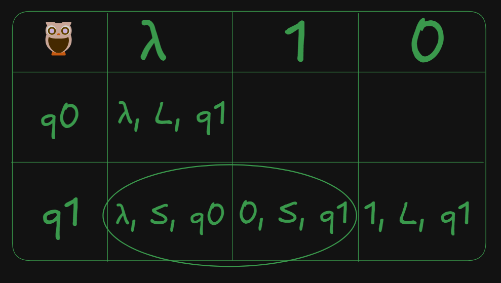
Буквально написано
Напиши λ, ОСТАНОВИСЬ, перейди в состояние q0
Напиши 0, ОСТАНОВИСЬ, перейди в состояние q1
На примере нашей последовательности:
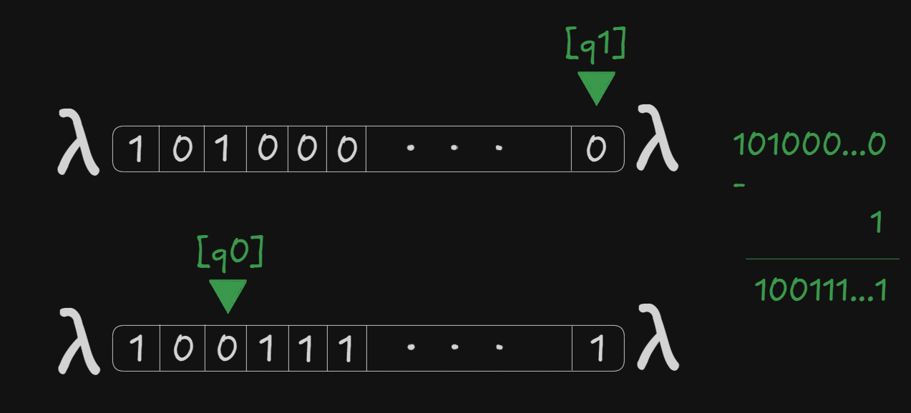
На более простом примере:
101000
↓
100111
Теперь Боря находится в состоянии q0 и НЕ ИМЕЕТ ДАЛЬНЕЙШИХ КОМАНД.
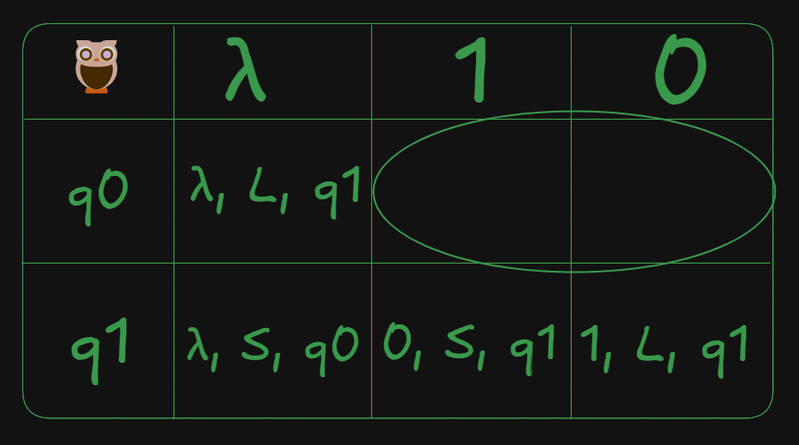
А значит все, ГГ, Боря отработал.
Это было описание вот того огромного объема текста основного условия и описания что и как работает. Теперь к вопросу.
После выполнения программы на ленте осталось ровно 343 нуля
Агасики. Т.е. мы знаем результат после вычитания 1, знаем общее кол-во нулей после работы, но не знаем сколько нулей было изначально.
Хотят от нас следующее:
Максимально возможное число нулей ИЗНАЧАЛЬНО, при условии, что ПОСЛЕ работы программы нулей стало ровно 343.
Резюмируем вышесказанное.
Что делает программа (по факту)
Она идёт справа налево:
пока видит 0 — заменяет 0→1 и идёт влево;
как только впервые видит 1 — заменяет 1→0 и останавливается;
если 1 так и не встретилась (строка вся из нулей) — дойдёт до λ и остановится (при этом все нули уже станут единицами).
То есть это вычитание 1 из двоичного числа (с правого конца).
Обозначения
Пусть в исходной строке было Z0 нулей (длина строки 1000).
Пусть k - сколько подряд нулей стоит справа от первой единицы.
Пусть Zf - сколько нулей стало по итогу.
Нам надо найти Z0.
Если в строке есть хотя бы одна 1
Тогда операция такая:
эти k правых нулей станут единицами ⇒ нулей станет на (k) меньше
первая слева от них единица станет нулём ⇒ нулей станет на 1 больше
Значит:
Zf=Z0−k+1
По условию (Zf=343), значит
343=Z0−k+1⇒Z0=342+k
Чтобы (Z0) было максимальным, надо сделать kмаксимальным, но при этом:
в строке должна быть хотя бы одна 1 (иначе финальных нулей было бы 0),
Z0≤1000,
если Z0=1000 — это “все нули”, а единиц нет, противоречие.
Значит максимум — (Z0=999) (999 нулей и 1 единица).
Ответ: максимально возможное число нулей в исходной последовательности - 999.
Общая формула для таких случаев
Это в целом общая формула для подобных задач, рекомендую записать: Zf=Z0±k±1
Разборы
Код для конкретно этого задания
В целом, какой-то конкретный пример МТ прототипа 12ого номера решить несложно. Сложнее придумать универсальное решение (см далее). Например, это конкретное задание кодом решается вот так:
Задаем начальные данные из условия:
final = 343maxStart = 0
Прокручиваем всю строку от первого до последнего элемента
for k in range(1001):
Используем готовую формулу
startZeros = final + k - 1
И перебираем в ней k
Ищем возможный максимум:
if startZeros <= 999:# ≤999 потому что нужен хотя бы один '1' maxStart = max(maxStart, startZeros)
Принтуем Ответ:
print(maxStart)
Но обратите внимание: фактически мы уже знаем как тут и чего. Т.е. как будто бы код просто излишний. Формулу-то мы взяли из рассуждений.
Пример 0)
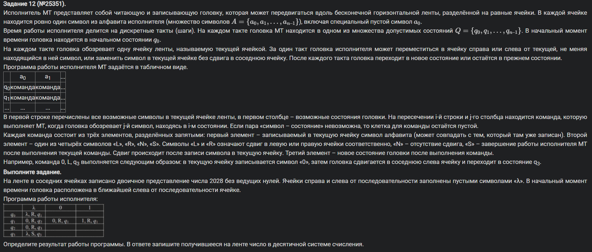
Ага, ага, ладно, ладно.
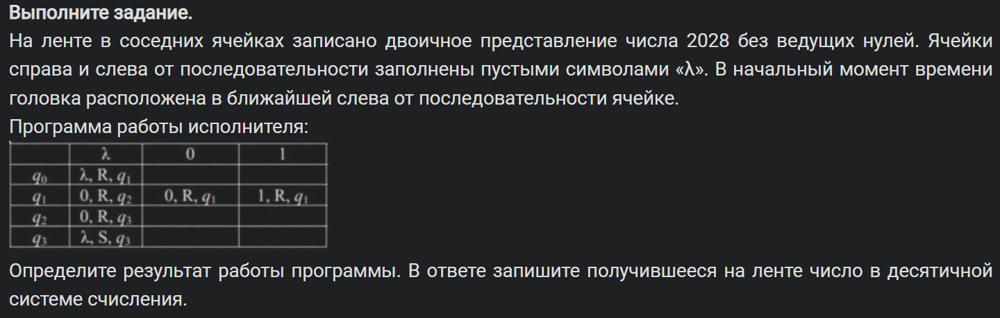
Вот то, что нам нужно.
Сова?
λ
0
1
q0
λ, R, q1
q1
0, R, q2
0, R, q1
1, R, q1
q2
0, R, q3
q3
λ, S, q3
Проанализируем. Программа стартует слева направо, ниче не меняет.
q1, 0: напиши 0, сдвинься ВПРАВО, перейди в q1
q1, 1: напиши 1, сдвинься ВПРАВО, перейди в q1
Пока не встретит λ. Как только встретила:
q1, λ: напиши 0, сдвинься ВПРАВО, перейди в q2
А в q2:
q2, λ: напиши 0, сдвинься ВПРАВО, перейди в q3
А в q3:
q3, λ: напиши λ, сдвинься ВПРАВО, перейди в q3
И все, дальше ничего меняться не будет.
Т.е., если имеем число 2028в двоичной, то результатом будет такое действие:
11111101100 → 1111110110000
Кто хорошо знает системы счисления - такое действие эквивалентно умножению числа в десятичной системе счисления на 4. Т.е. ответ 8112. Но если не знаете - можно прогой:
Звездный (универсальный) код
Забавный факт
ВО ВСЕХ примерах этого задания на настоящем ЕГЭ в 2026 году было ОДИНАКОВОЕ УСЛОВИЕ. Вот такое: На ленте в соседних ячейках записано двоичное представление числа X без ведущих нулей (…) Определите результат работы программы.
Именно это обстоятельство и позволит нам написать универсальный код. Это же является ограничением - если условие другое, этот код не подойдет.
Сие есть программа, которая гарантированно решит любую задачу №12 из ЕГЭ 2026. К сожалению, не гарант, что в следующих годах будет то же самое условие. Код сложный, зато крайне шаблонный.
Долгий нудный разбор Звездного кода
Разбор шаблона построчно
Весь код делится на три части: вход (что переписываем из условия), подготовка (три строки, превращающие текст в удобные структуры) и цикл (собственно машина). Меняется только первая часть.
Тройные кавычки """ — это способ записать многострочную строку. Обычная строка в кавычках не может содержать перенос строки, а такая — может. Внутри лежит просто текст, Python в него не заглядывает.
Мы переписали таблицу из условия один в один, добавив всего два своих правила:
первое слово в строке — имя состояния;
пустая клетка таблицы обозначается дефисом -, чтобы не было «дырок».
Почему дефис обязателен: если бы мы оставили пустое место, Python не смог бы понять, к какому столбцу относится команда. Он не видит рамки таблицы, он видит только слова, разделённые пробелами. Строка q2 0,R,q2 1,R,q3 для него — это «состояние q2 и две команды», и он решил бы, что первая команда стоит в столбце λ. Это была бы ошибка. С дефисом всё однозначно.
Количество пробелов между столбцами при этом не важно вообще — можно выравнивать как красиво.
n, head = 800, 'справа'
Число из условия и место головки. head пишем словом, чтобы не путаться со знаками.
Часть 2. Подготовка
Строка А: таблица → словарь команд
prog = {(r[0], s): c for r in map(str.split, table.strip().split('\n')) for s, c in zip('λ01', r[1:]) if c != '-'}
Это самая плотная строка в шаблоне, поэтому разберём её по слоям — изнутри наружу.
Слой 1: table.strip()
strip() убирает пробелы и переносы строк по краям. Наша строка начинается с переноса (сразу после """) и им же заканчивается. Без strip() мы получили бы две пустые строки — в начале и в конце — и код сломался бы на них.
Слой 2: .split('\n')
Разрезает текст по переносам строк. Получается список из пяти строк:
map(функция, список) применяет функцию к каждому элементу списка. Здесь функция — str.split, то есть «разрежь строку по пробелам». Записать можно было бы и так:
for r in [s.split() for s in table.strip().split('\n')]
Вот здесь важно заметить: split() без аргументов схлопывает любое количество пробелов. Именно поэтому выравнивание в таблице не имеет значения, а дефисы — имеют.
Слой 4: zip('λ01', r[1:])
Возьмём одну строку, например r = ['q1', 'λ,R,q2', '0,L,q1', '1,L,q1'].
r[0] — это 'q1', имя состояния. r[1:] — это «всё, начиная с первого элемента», то есть ['λ,R,q2', '0,L,q1', '1,L,q1'] — только команды, без имени состояния.
zip склеивает два списка попарно, как молнию на куртке. Строка 'λ01' — это последовательность из трёх символов, то есть заголовок таблицы. Получаем:
('λ', 'λ,R,q2')('0', '0,L,q1')('1', '1,L,q1')
То есть пара «символ столбца → команда в этой клетке». Ровно то, что нужно.
Слой 5: собираем словарь
Ключ — кортеж (состояние, символ), значение — команда. Условие if c != '-' выбрасывает пустые клетки: их в словаре просто не будет.
Развернём всё включение в обычные циклы — это буквально тот же код:
prog = {}for r in rows: # r = ['q1', 'λ,R,q2', '0,L,q1', '1,L,q1'] for s, c in zip('λ01', r[1:]): # s = '0', c = '0,L,q1' if c != '-': prog[r[0], s] = c # prog['q1', '0'] = '0,L,q1'
Результат — 12 записей (из 15 клеток таблицы три были пустыми):
Зачем это пригодится дальше: теперь «найти команду на пересечении строки и столбца» — это одно обращение prog[состояние, символ]. Ровно то же движение, которое ты делаешь пальцем по таблице в условии.
Строка Б: число → лента
tape = dict(enumerate(bin(n)[2:]))
Изнутри наружу:
bin(800) даёт строку '0b1100100000'. Приставка 0b — это пометка «двоичное», она нам не нужна.
Ключевая идея всего шаблона: лента — это словарь, а не список. У списка нет ячейки с номером -1 (точнее, есть, но это последний элемент — и это ловушка). У словаря ключом может быть любое число, в том числе -1, -2, -100. Поэтому лента у нас честно бесконечна в обе стороны и не надо заранее подкладывать пустые ячейки по краям и пересчитывать индексы.
Строка В: начальное положение
pos, st = len(tape) if head == 'справа' else -1, 'q0'
Здесь две вещи сразу.
Во-первых, тернарный операторA if условие else B: «взять A, если условие верно, иначе B». Читается как обычное предложение слева направо.
Ячейки числа занимают номера от 0 до len(tape)-1, то есть от 0 до 9. Значит:
ближайшая справа свободная ячейка — это номер 10, то есть len(tape);
ближайшая слева — это номер -1.
Во-вторых, множественное присваивание: слева две переменные, справа два значения через запятую. Это то же самое, что:
pos = len(tape) if head == 'справа' else -1st = 'q0'
Начальное состояние всегда q0 — так сказано в общей части условия.
Часть 3. Цикл — сама машина
for _ in range(10**5):
Один проход цикла = один такт работы МТ. Подчёркивание _ — это обычное имя переменной; так принято обозначать «счётчик, значение которого нам не нужно».
Логичнее было бы написать while True — машина работает, пока не встретит S. Но если ты ошибёшься при переписывании таблицы, while True может зациклиться навсегда и подвесить компьютер прямо на экзамене. Ограничение в 100 000 тактов решает это бесплатно: реальные задания укладываются в пару десятков тактов, а сломанная таблица просто напечатает ерунду, и ты сразу пойдёшь перечитывать условие.
w, m, st = prog[st, tape.get(pos, 'λ')].split(',')
Опять изнутри наружу.
tape.get(pos, 'λ') — «дай символ в ячейке pos, а если такой ячейки нет — верни 'λ'». Обычное tape[pos] на несуществующем ключе выдало бы ошибку. А .get с запасным значением как раз и реализует «вся остальная лента заполнена пустыми символами». Это вторая половина трюка со словарём: нам не нужно ничего заполнять заранее, пустота получается сама.
prog[st, ...] — берём команду из словаря. Запись prog[st, символ] — это сокращение от prog[(st, символ)], скобки кортежа можно опустить.
.split(',') — команда хранится строкой '0,L,q1'. Режем по запятым: ['0', 'L', 'q1'].
w, m, st = ... — распаковка списка из трёх элементов в три переменные:
w — что записать (write),
m — куда двигаться (move),
st — новое состояние; сразу перезаписываем старое, оно больше не нужно.
Обрати внимание, как аккуратно это ложится на условие: «команда состоит из трёх элементов, разделённых запятыми» → три переменные через запятую.
tape[pos] = w
Записываем символ в текущую ячейку. Если ячейки не было — она создаётся прямо здесь. В условии сказано «сдвиг происходит после записи символа» — поэтому запись стоит до изменения pos.
if m == 'S': break
S означает завершение работы — выходим из цикла. Важно, что запись уже произошла строкой выше: команда 1,S,q3 сначала пишет единицу, и только потом машина останавливается.
pos += 1 if m == 'R' else -1
Опять тернарный оператор. R — вправо, номер ячейки растёт на 1. Иначе (L) — влево, уменьшается на 1.
Вариант N (без сдвига) сюда формально не попадает — при N мы бы уехали влево. На практике в этом номере N не встречается ни разу; если вдруг встретится, добавляется одна строка if m == 'N': continue перед сдвигом.
Как это выглядит в работе
Первые такты на нашем примере (800 = 1100100000, головка справа, pos = 10):
Такт
Состояние
pos
Символ
Команда
Что произошло
1
q0
10
λ
λ,L,q1
шаг влево, перешли в q1
2
q1
9
0
0,L,q1
ноль оставили, идём влево
3–11
q1
8→0
0/1
0,L,q1 / 1,L,q1
q1 просто «пробегает» число справа налево, ничего не меняя
12
q1
−1
λ
λ,R,q2
упёрлись в пустоту слева, развернулись
13
q2
0
1
1,R,q3
нашли первую единицу
14
q3
1
1
0,R,q4
вторую единицу заменили на ноль
15–22
q4
2→9
—
q4 добегает до конца, ничего не меняя
23
q4
10
λ
λ,S,q4
стоп
Здесь хорошо видно, что состояния — это не магия, а роли: q1 — «доехать до левого края», q2 — «найти первую единицу», q3 — «обработать следующую», q4 — «доехать до конца и остановиться».
Вывод результата
print(''.join(tape[i] for i in sorted(tape)))
sorted(tape) даёт ключи словаря по возрастанию: -1, 0, 1, ..., 10. Словарь хранит ячейки в порядке создания, а нам нужен порядок слева направо — отсюда сортировка.
''.join(...) склеивает символы в строку без разделителя. Получаем λ1000100000λ — это лента целиком, вместе с пустыми символами по краям, которых машина касалась.
Эту строку печатаем для самопроверки: видно, что число стало 1000100000, что λ не появились в середине, что ничего не потерялось.
print(int(''.join(tape[i] for i in sorted(tape) if tape[i] != 'λ'), 2))
То же самое, но с фильтром if tape[i] != 'λ' — выбрасываем пустые символы, остаются только нули и единицы: '1000100000'.
int(строка, 2) переводит из двоичной системы в десятичную: 1000100000₂ = 512 + 32 = 544.
Ответ: 544.
Пример 1)
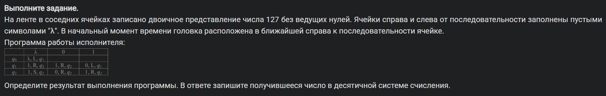
Если решать руками, то это выглядит примерно так:
Решение руками
Исходное число:
12710=11111112
Головка изначально стоит справа от числа на λ.
1. Заходим в число
В q0:
λ → λ, L, q1
То есть просто шагаем влево на последнюю единицу и переходим в q1.
2. Работаем в q1
Для единицы команда:
1 → 0, L, q1
Значит Боря идёт справа налево и каждую единицу превращает в ноль.
Было:
1111111
Стало:
0000000
После семи шагов он оказывается на λ слева от числа.
3. Встретили левый λ
В q1:
λ → 1, R, q2
То есть пустую клетку слева превращаем в 1:
1 0000000
и начинаем идти вправо в состоянии q2.
4. В q2 проходим нули
Для 0:
0 → 0, R, q2
То есть все семь нулей просто проходим, ничего не меняя.
Доходим до правого λ.
5. На правом λ
В q2:
λ → 1, S, q2
Приписываем справа единицу и останавливаемся:
100000001
Теперь переводим в десятичную:
1000000012=28+1=256+1=257
Ответ: 257
Пример 2)
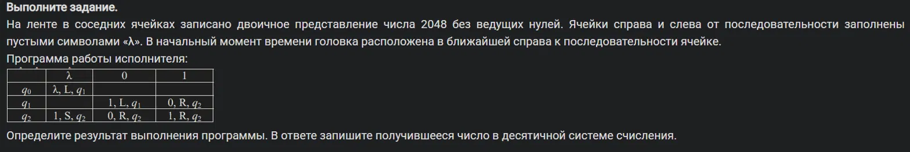
Решение руками
Исходное число:
204810=1000000000002
То есть 1 и затем 11 нулей.
1. Заходим в число
Головка стоит справа на λ
В q0:
λ → λ, L, q1
Просто шагаем влево на последний 0.
2. В q1 идём справа налево
Для 0 команда:
0 → 1, L, q1
То есть каждый ноль превращаем в единицу и идём дальше влево.
У нас справа подряд стоят все 11 нулей:
100000000000
После их обработки:
111111111111^головка дошла до исходной первой 1
Точнее первая исходная 1 ещё не обработана, а остальные 11 символов уже стали единицами:
1 11111111111^
3. Встречаем исходную единицу
Для 1 в q1:
1 → 0, R, q2
Значит первая единица превращается в ноль:
0 11111111111
И головка разворачивается — теперь идёт вправо в состоянии q2.
4. В q2 ничего внутри уже не меняется
В q2:
0 → 0, R, q21 → 1, R, q2
То есть просто идём вправо до самого конца.
На правом λ:
λ → 1, S, q2
Приписываем ещё одну единицу справа и останавливаемся.
Получается:
0 111111111111
Ведущий 0 на значение не влияет, поэтому фактически:
111111111111₂
Это 12 единиц подряд.
1111111111112=4096−1=4095
Ответ: 4095
Пример 3)
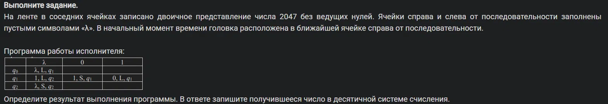
Решение руками
Исходное число:
204710=111111111112=211−1
То есть 11 единиц подряд.
1. Заходим в число
Головка стоит справа от числа на λ.
В q0:
λ → λ, L, q1
Просто делаем шаг влево и попадаем на последнюю единицу.
2. Идём справа налево
В состоянии q1 для 1:
1 → 0, L, q1
То есть каждую единицу заменяем на ноль и продолжаем двигаться влево.
Было:
11111111111
После прохода:
00000000000
После последней единицы головка попадает на λ слева.
3. Дошли до левого края
Для λ в состоянии q1:
λ → 1, L, q2
То есть слева от всех этих нулей записывается единица:
1 00000000000
После этого головка ещё раз смещается влево и переходит в q2.
4. Остановка
В q2 на λ:
λ → λ, S, q2
Стоп.
Итоговая двоичная запись:
100000000000
Это единица и 11 нулей, то есть
1000000000002=211=2048
Ответ: 2048
Пример 4)
Это номер 23147
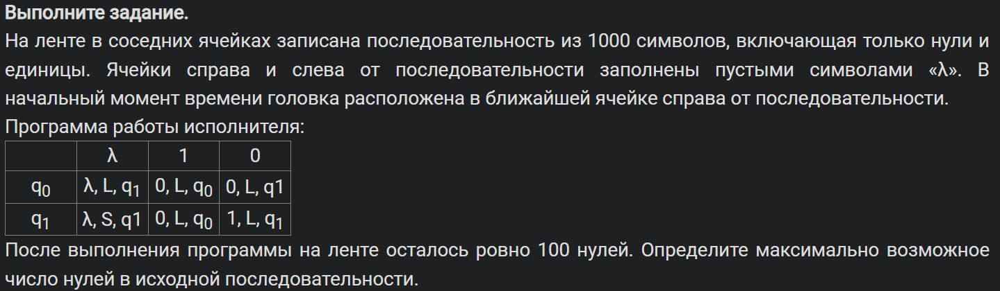
Решение руками
Что делает наша программа?
Мы начинаем из состояния q0 и видим λ. Значит он движется справа налево и оставляет λ как есть, переходит в состояние q1. Т.е. мы осуществляем вот такой переход:
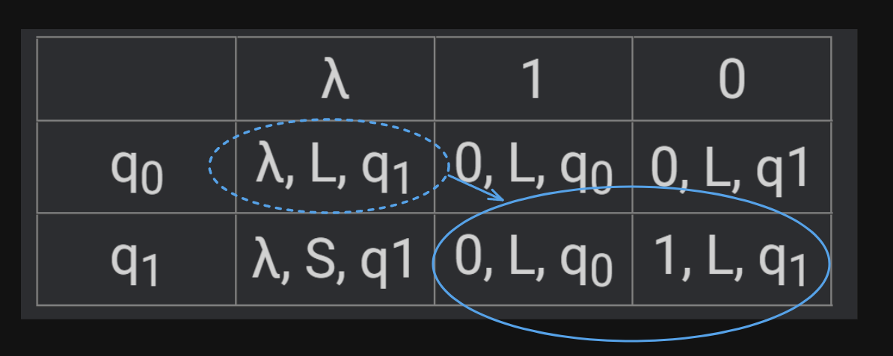
А далее, если Боря видит нолики, то меняет их на 1 и двигается далее. Если видит 1, то он меняет на нолики и переходит в состояние q0. Пока давайте зафиксируем:
Происходит инверсия. 0 -> 1 и 1 -> 0
Если Боря встретил 1, то он переходит в q0, предварительно инвертировав единицу. Теперь мы вот здесь:
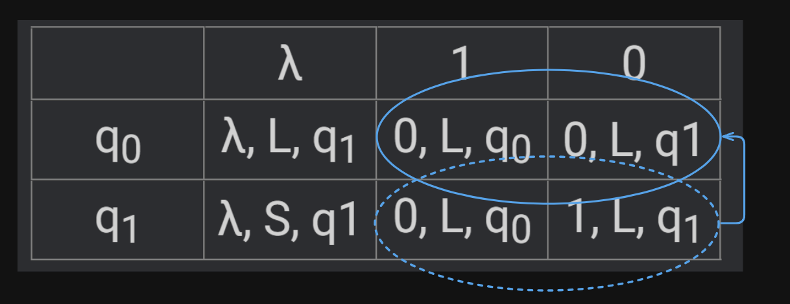
В этом состоянии он все меняет на нолики, но переходит в q1 тогда и только тогда, когда встретит 0.
Вывод:
Боря занимается ерундой в q1 инвертирует числа, а в q0 меняет все на 0. Переключение между q1 и q0 происходит тогда, когда Боря в q1 встретил 1 или в q0 встретил 0.
Окей, разобрались. Но как ответить на вопрос?
После выполнения программы на ленте осталось ровно 100 нулей. Определите максимально возможное кол-во нулей в исходной последовательности.
Давайте заметим одну приколюху. Если происходит чередование 0 и 1 в изначальной строке, то он все меняет на 0. Как-то так:
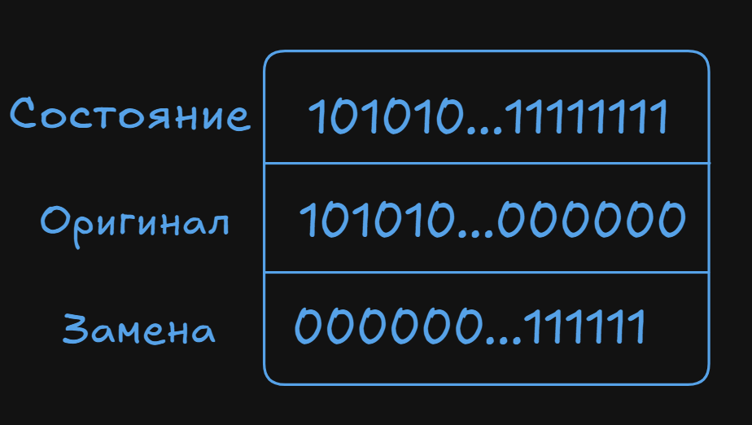
Соответственно, если в замене у нас 100 нулей, а оригинал чередуется, а оставшиеся - это 900 нулей, то всего у нас 950 нулей.
Ответ: 950.
Пример 5)
Это номер 24305
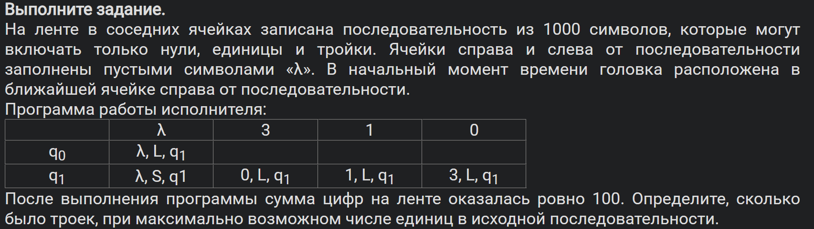
Решение руками
1) Что делает программа
Старт:
q0 на правом λ: (q0,λ)→λ,L,q1 — заходим на последний символ.
Дальше в q1 она идёт влево по всей строке, пока не встретит левый λ, где остановится: (q1,λ)→λ,S,q1.
При этом замены такие:
если видит 3 → пишет 0 (то есть 3→0)
если видит 1 → пишет 1 (то есть 1→1)
если видит 0 → пишет 3 (то есть 0→3)
Итого это просто отображение:
0→3,1→1,3→0
2) Переводим условие “сумма цифр после = 100” в уравнение
Пусть в исходной строке было:
(n0) нулей
(n1) единиц
(n3) троек
и (n0+n1+n3=1000).
После замены:
троек станет ровно (n0) (потому что (0→3))
единиц станет (n1)
нулей станет (n3)
Сумма цифр после:
0⋅n3+1⋅n1+3⋅n0=n1+3n0=100
3) Максимизируем число единиц в исходной строке
Из уравнения:
n1=100−3n0
Чтобы (n1) было максимальным, надо (n0) сделать минимальным.
Минимум (n0) — это 0.
Тогда:
(n0=0)
(n1=100)
(n3=1000-0-100=900)
Ответ: 900
Пример 6)
Это номер 24553
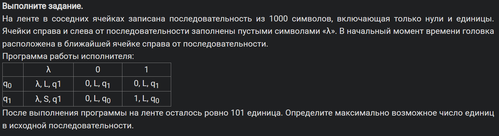
Решение руками
1) Что делает программа
q0:
на λ → λ, L, q1
на 0 → 0, L, q1
на 1 → 0, L, q1(то есть в q0 единица превращается в ноль)
q1:
на λ → λ, S, q1 (остановка)
на 0 → 0, L, q0
на 1 → 1, L, q0(то есть в q1 символ не меняется)
Старт: головка справа от последовательности, состояние q0.
Первый шаг: увидели λ → шагнули влево на последний символ и стали q1.
Дальше головка всегда идёт влево и состояния строго чередуются: q1, q0, q1, q0, ...
2) Какие позиции “портятся”, а какие остаются
Нумеруем символы с правого края: самый правый имеет номер 0, левее — 1, 2, …
позиция 0 обрабатывается в q1 → не меняется
позиция 1 обрабатывается в q0 → становится 0 всегда
позиция 2 в q1 → не меняется
позиция 3 в q0 → становится 0 всегда
и т.д.
👉 Значит:
все позиции с нечётным номером (1,3,5,…) гарантированно станут 0
позиции с чётным номером (0,2,4,…) останутся как были
3) Условие: после работы осталось 101 единица
Единицы могут остаться только на чётных позициях (считая справа).
Чётных позиций в строке длины 1000 ровно 500.
Чтобы после работы было 101 единица, нужно:
на чётных позициях изначально поставить ровно 101 единицу
остальные чётные позиции сделать нулями
4) Максимизируем число единиц в исходной строке
Нечётные позиции (их тоже 500) всё равно обнулятся, поэтому туда можно смело поставить все единицы, чтобы увеличить исходное количество.
Тогда максимум единиц в исходной:
500 (все нечётные позиции)
101 (на чётных, чтобы после осталось 101)
Итого: 500 + 101 = 601
Пример 7)
Это номер 26348
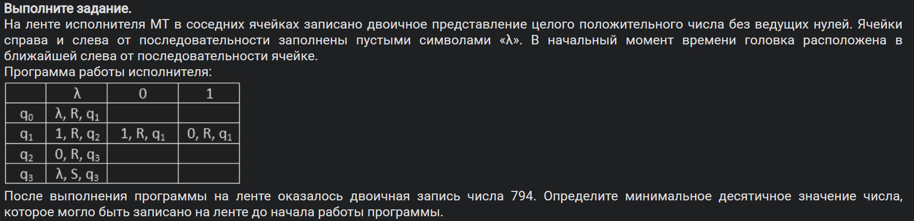
Хитрое задание. С одной стороны, довольно очевидно, что тут происходит инверсия и прибавка символов 10. Ну т.е., если было число X в двоичном виде, то станет NOT(X) + '10'. С другой стороны, я когда решал я сам запутался, поэтому говорю как есть:
Фраза “без ведущих нулей” относится только к исходному числу, а не к замененному. Т.е. замена вполне может начинаться с нуля. В то время как оригинал, очевидно, не может.
Соответственно, долго не думая лезем в питон и воспроизводим обратную картину: